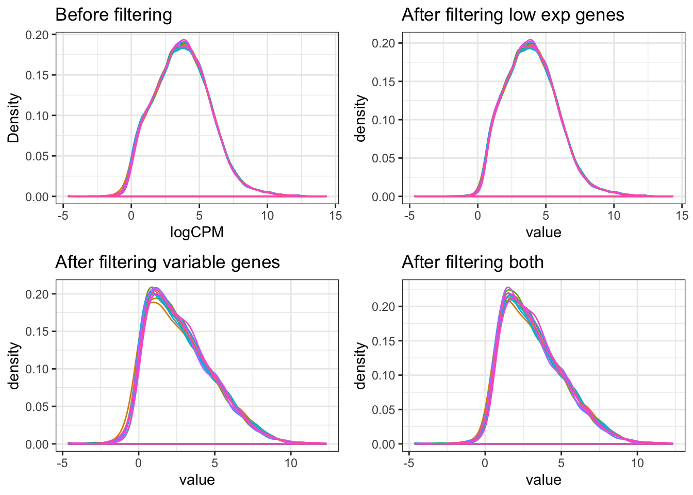
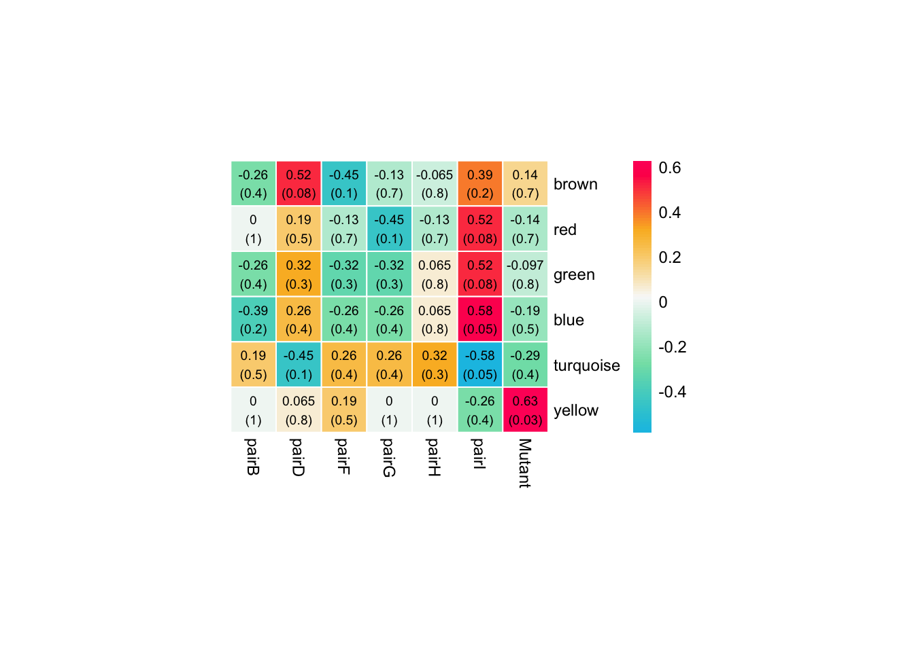

5_WGCNA
Yang & Steve
29/09/2020
Last updated: 2020-10-28
Checks: 6 1
Knit directory: 20190717_Lardelli_RNASeq_Larvae/
This reproducible R Markdown analysis was created with workflowr (version 1.6.0). The Checks tab describes the reproducibility checks that were applied when the results were created. The Past versions tab lists the development history.
Great! Since the R Markdown file has been committed to the Git repository, you know the exact version of the code that produced these results.
Great job! The global environment was empty. Objects defined in the global environment can affect the analysis in your R Markdown file in unknown ways. For reproduciblity it’s best to always run the code in an empty environment.
The command set.seed(20200227) was run prior to running the code in the R Markdown file. Setting a seed ensures that any results that rely on randomness, e.g. subsampling or permutations, are reproducible.
Great job! Recording the operating system, R version, and package versions is critical for reproducibility.
- Soft Thresholding Power Plots
To ensure reproducibility of the results, delete the cache directory 5_WGCNA_cache and re-run the analysis. To have workflowr automatically delete the cache directory prior to building the file, set delete_cache = TRUE when running wflow_build() or wflow_publish().
Great job! Using relative paths to the files within your workflowr project makes it easier to run your code on other machines.
Great! You are using Git for version control. Tracking code development and connecting the code version to the results is critical for reproducibility. The version displayed above was the version of the Git repository at the time these results were generated.
Note that you need to be careful to ensure that all relevant files for the analysis have been committed to Git prior to generating the results (you can use wflow_publish or wflow_git_commit). workflowr only checks the R Markdown file, but you know if there are other scripts or data files that it depends on. Below is the status of the Git repository when the results were generated:
Ignored files:
Ignored: .DS_Store
Ignored: .Rhistory
Ignored: .Rproj.user/
Ignored: 1_DE-gene-analysis_cache/
Ignored: 1_DE-gene-analysis_files/
Ignored: analysis/.DS_Store
Ignored: analysis/.Rhistory
Ignored: analysis/.Rproj.user/
Ignored: analysis/5_WGCNA_cache/
Ignored: data/.DS_Store
Ignored: data/0_rawData/.DS_Store
Ignored: data/1_trimmedData/.DS_Store
Ignored: data/2_alignedData/.DS_Store
Ignored: files/
Ignored: keggdiagram/.DS_Store
Ignored: output/.DS_Store
Unstaged changes:
Modified: analysis/index.Rmd
Staged changes:
Modified: analysis/index.Rmd
Note that any generated files, e.g. HTML, png, CSS, etc., are not included in this status report because it is ok for generated content to have uncommitted changes.
These are the previous versions of the R Markdown and HTML files. If you’ve configured a remote Git repository (see ?wflow_git_remote), click on the hyperlinks in the table below to view them.
| File | Version | Author | Date | Message |
|---|---|---|---|---|
| Rmd | 417413a | yangdongau | 2020-10-28 | Add in WGCNA and variance partitioning analysis |
| html | 417413a | yangdongau | 2020-10-28 | Add in WGCNA and variance partitioning analysis |
Setup
library(dplyr)
library(magrittr)
library(reshape2)
library(readr)
library(tibble)
library(tidyverse)
library(pander)
library(biomaRt)
library(limma)
library(edgeR)
library(genefilter)
library(WGCNA)
library(dynamicTreeCut)
library(ggplot2)
library(RColorBrewer)
library(grid)
# Viewpoints for showing 4 plots on a 2x2 grid
vp1 <- viewport(x = 0, y = 0, width = 0.5, height = 0.5, just = c(0, 0))
vp2 <- viewport(x = 0.5, y = 0, width = 0.5, height = 0.5, just = c(0,0))
vp3 <- viewport(x = 0, y = 0.5, width = 0.5, height = 0.5, just = c(0, 0))
vp4 <- viewport(x = 0.5, y = 0.5, width = 0.5, height = 0.5, just = c(0, 0))
library(kableExtra)
library(pheatmap)
library(anRichment)
theme_set(theme_bw())
panderOptions("big.mark", ",")
panderOptions("table.split.table", Inf)
panderOptions("table.style", "rmarkdown")
if (interactive()) setwd(here::here("analysis"))Data load
dgeList <- read_rds(here::here("data","dgeList.rds"))
entrezGenes <- dgeList$genes %>%
dplyr::filter(!is.na(entrez_gene)) %>%
unnest(entrez_gene) %>%
dplyr::rename(entrez_gene = entrez_gene)
topTable <- file.path(here::here("output", "topTable.csv")) %>%
read_csv()Filtering
Only keep the genes of high expression (cpm > 1.5 in 6 samples) and high variation (not in the bottom 25%).
A <- dgeList %>%
cpm(log = TRUE) %>%
melt %>%
dplyr::filter(is.finite(value)) %>%
ggplot(aes(x = value, colour = Var2)) +
geom_density() +
guides(colour = FALSE) +
ggtitle("Before filtering") +
labs(x = "logCPM", y = "Density")
# Retain genes which are expressed at sufficiently high levels, at least 1.5 cpm in 6 (half of the total number of) samples.
keepTheseGenes <- rowSums(cpm(dgeList) > 1.5) >= 6
# Density plot of the gene expression distribution after filtering out low expressed genes.
B <- dgeList %>%
cpm(log = TRUE) %>%
.[keepTheseGenes,] %>%
melt %>%
dplyr::filter(is.finite(value)) %>%
ggplot(aes(x = value, colour = Var2)) +
geom_density() +
guides(colour = FALSE) +
ggtitle("After filtering low exp genes")
# Retain genes with sufficiently high variation in expression across all samples.
# Here we define sufficiently high variation as having a standard deviation above the 25th quantile (so not in bottom 25%).
variableGenes <- rowSds(cpm(dgeList, log=TRUE)) > quantile(rowSds(cpm(dgeList, log=TRUE)), 0.75)
# Density plot of gene expression distribution after filtering out low variance genes.
C <- dgeList %>%
cpm(log = TRUE) %>%
.[variableGenes,] %>%
melt %>%
dplyr::filter(is.finite(value)) %>%
ggplot(aes(x = value, colour = Var2)) +
geom_density() +
guides(colour = FALSE) +
ggtitle("After filtering variable genes")
# Density plot of gene expression distribution after filtering out both low expressed and low variance genes.
D <- dgeList %>%
cpm(log = TRUE) %>%
.[keepTheseGenes&variableGenes,] %>%
melt %>%
dplyr::filter(is.finite(value)) %>%
ggplot(aes(x = value, colour = Var2)) +
geom_density() +
guides(colour = FALSE) +
ggtitle("After filtering both")
# Plot the effect of filtering low expressed genes, low variation genes, and both.
grid.newpage()
print(A, vp = vp3)
print(B, vp = vp4)
print(C, vp = vp1)
print(D, vp = vp2)
| Version | Author | Date |
|---|---|---|
| 417413a | yangdongau | 2020-10-28 |
dgeList_filtered <- dgeList[keepTheseGenes&variableGenes,,keep.lib.sizes = FALSE]There are 19396 in dgeList. After filtering, 4144 genes are retained.
Convert gene counts into logCPM form and stored in gene count matraix X.
X <- dgeList_filtered$counts %>%
cpm(log=TRUE) %>% t %>% as.data.frameCheck Sample Clustering
Here we use the gene expression patterns described in X to build sample dendrogram (sample tree), and check how the traits related to the sample dendrogram.
traits uses the design matrx used in previous DE genes analysis.
# Apply hierarchial clustering to X.
sampleTree <- hclust(dist(X), method = "average")
# Using the design matrix, which contains information of samples' pair and genotype
traits <- expDesign <- model.matrix(~0 + pair + Genotype, dgeList$samples) %>%
set_colnames(str_replace(colnames(.), pattern = "Genotype.+", "Mutant")) %>% as.data.frame
# Assign each group in design matrix to a colour.
traitColors <- numbers2colors(traits, signed = FALSE, colors = c("#ffffff", "#73626E"))
# Plot dendrogram of clustered samples with the design matrix underneath.
plotDendroAndColors(sampleTree, traitColors,
groupLabels = names(traits),
main = "Sample dendrogram and trait heatmap")
Hierarchial clustering of Q96K97del larvae RNA-seq libraries based on expression of 13,538 genes in the matrix X.
| Version | Author | Date |
|---|---|---|
| 417413a | yangdongau | 2020-10-28 |
Choosing the soft-Thresholding Power
Constructing a weighted gene network requires a soft-thresholding power β, which will be chosen based on the scale-free topology criterion described by Zhang & Horvath (2005).
Here we performs the analysis of network topology for choosing a proper soft-thresholding power.
The following plots show the sufficiently high scale-free topology index (R2). We choose 13 as soft thresholding power, which is the lowest power reaching a high value (roughly 0.8).
# Choose a set of soft thresholding powers and call the network topology analysis fucntion.
# Here I use a signed network
powers <- c(c(1:10), seq(from = 12, to = 26, by = 2))
sft <- pickSoftThreshold(X, powerVector = powers, verbose = 5, networkType = "signed")pickSoftThreshold: will use block size 4144.
pickSoftThreshold: calculating connectivity for given powers...
..working on genes 1 through 4144 of 4144
Power SFT.R.sq slope truncated.R.sq mean.k. median.k. max.k.
1 1 1.50e-01 4.7600 0.663 2090.0 2090.0 2240
2 2 2.92e-05 -0.0383 0.472 1230.0 1200.0 1510
3 3 5.93e-02 -0.8130 0.669 799.0 778.0 1130
4 4 1.16e-01 -0.7250 0.794 557.0 537.0 899
5 5 2.18e-01 -0.7320 0.848 408.0 388.0 741
6 6 3.50e-01 -0.7880 0.875 311.0 290.0 626
7 7 4.84e-01 -0.8500 0.893 245.0 222.0 541
8 8 5.96e-01 -0.9330 0.891 197.0 174.0 475
9 9 6.85e-01 -0.9820 0.899 162.0 138.0 422
10 10 7.39e-01 -1.0100 0.904 136.0 111.0 378
11 12 7.76e-01 -1.0600 0.895 98.7 74.5 311
12 14 8.17e-01 -1.0900 0.895 74.9 52.6 262
13 16 8.41e-01 -1.1000 0.900 58.7 38.4 225
14 18 8.69e-01 -1.1100 0.915 47.1 28.5 196
15 20 8.77e-01 -1.1400 0.924 38.6 21.6 175
16 22 8.56e-01 -1.1800 0.911 32.2 16.5 158
17 24 8.56e-01 -1.2100 0.913 27.2 12.9 144
18 26 8.46e-01 -1.2400 0.908 23.2 10.2 132# Plot the effect of soft-thresholding power on network topologies.
sizeGrWindow(9, 5)
par(mfrow = c(1,2))
cex1 = 0.9
plot(sft$fitIndices[,1], -sign(sft$fitIndices[,3])*sft$fitIndices[,2],
xlab="Soft Threshold (power)",ylab="Scale Free Topology Model Fit,signed R^2",type="n",
main = paste("Scale independence"));
text(sft$fitIndices[,1], -sign(sft$fitIndices[,3])*sft$fitIndices[,2], labels=powers,cex=cex1,col="red")
# this line corresponds to using an R^2 cut-off of 0.80.
abline(h=0.8,col="red")
plot(sft$fitIndices[,1], sft$fitIndices[,5],
xlab="Soft Threshold (power)",ylab="Mean Connectivity", type="n",
main = paste("Mean connectivity"))
text(sft$fitIndices[,1], sft$fitIndices[,5], labels=powers, cex=cex1,col="red")
Warning: The above code chunk cached its results, but it won’t be re-run if previous chunks it depends on are updated. If you need to use caching, it is highly recommended to also set knitr::opts_chunk$set(autodep = TRUE) at the top of the file (in a chunk that is not cached). Alternatively, you can customize the option dependson for each individual chunk that is cached. Using either autodep or dependson will remove this warning. See the knitr cache options for more details.
Choose the power 13.
Step by step network construction
softPower <- 13
# Calculate the adjacency matrix, using the soft thresholding power 13
adjacency_zebrafish <- adjacency(X, power = softPower, type = "signed")
# To minimise effects of noise and spurious correlations, we transform the adjacency into a Topological Overlap Matrix (TOM) and calculate the dissimilarity.
TOM_zebrafish <- TOMsimilarity(adjacency_zebrafish, TOMType = "signed")..connectivity..
..matrix multiplication (system BLAS)..
..normalization..
..done.dissTOM_zebrafish <- 1-TOM_zebrafish
# We now use hierarchial clustering to produce a hierarchial clustering tree (dendrogram) of genes using TOM
geneTree_zebrafish <- hclust(as.dist(dissTOM_zebrafish), method = "average")
# Plot the dendrogram
plot(geneTree_zebrafish, xlab = "", ylab = "", main = "Gene clustering on TOM-based dissimilarity", labels = FALSE, hang = 0.04)
| Version | Author | Date |
|---|---|---|
| 417413a | yangdongau | 2020-10-28 |
Check similarity of modules before merging
dynamicMods = cutreeDynamic(dendro = geneTree_zebrafish, distM = dissTOM_zebrafish,
deepSplit = 2, pamRespectsDendro = FALSE,
minClusterSize = 50) ..cutHeight not given, setting it to 0.991 ===> 99% of the (truncated) height range in dendro.
..done.dynamicColors = labels2colors(dynamicMods)
table(dynamicColors)dynamicColors
black blue brown cyan green
234 541 501 88 419
greenyellow magenta midnightblue pink purple
135 194 66 196 154
red salmon tan turquoise yellow
393 89 129 558 447 MEList = moduleEigengenes(X, colors = dynamicColors)
MEs = MEList$eigengenes
# Calculate dissimilarity of module eigengenes
MEDiss = 1-cor(MEs);
# Cluster module eigengenes
METree = hclust(as.dist(MEDiss), method = "average");
# Plot the result
sizeGrWindow(7, 6)
plot(METree, main = "Clustering of module eigengenes",
xlab = "", sub = "")Final modules
# Using 80 as minimum module size With PAM
treeCut_zebrafish <- dynamicTreeCut::cutreeDynamic(
dendro = geneTree_zebrafish,
distM = dissTOM_zebrafish,
method = "hybrid",
minClusterSize = 80,
minGap = 0.25,
maxCoreScatter = 0.75,
verbose = 0,
pamStage = TRUE,
#deepSplit = 3,
cutHeight = 0.8
)
colors_zebrafish <- labels2colors(treeCut_zebrafish)
table(colors_zebrafish)colors_zebrafish
blue brown green grey red turquoise yellow
330 316 161 2586 151 417 183 plotDendroAndColors(geneTree_zebrafish,
colors_zebrafish, "Dynamic Tree Cut",
dendroLabels = FALSE, hang = 0.03, addGuide = TRUE, guideHang = 0.05,
main = "Gene dendrogram and module colours")
| Version | Author | Date |
|---|---|---|
| 417413a | yangdongau | 2020-10-28 |
Relating modules to traits
# Define numbers of genes and samples
nGenes <- ncol(X)
nSamples <- nrow(X)
# Recalculate the MEs with colour labels
MEs0 <- moduleEigengenes(X, colors_zebrafish)$eigengenes
MEs <- orderMEs(MEs0)
moduleTraitCor <- cor(MEs, traits, use = "p", method = "spearman")
# Remove the grey module
moduleTraitCor <- moduleTraitCor[rownames(moduleTraitCor) != "MEgrey",]
#moduleTraitCor <- bicor(MEs, traits, use = "p", maxPOutliers = 0.1, robustY=FALSE)
moduleTraitPValue <- corPvalueStudent(moduleTraitCor, nSamples)Plot the relationships between module and trait
# Visualise relationships between modules and traits.
# Will display correlations and their p-values
textMatrix <- paste(signif(moduleTraitCor, 2), "\n(", signif(moduleTraitPValue, 1), ")", sep = "")
dim(textMatrix) <- dim(moduleTraitCor)
pheatmap::pheatmap(
moduleTraitCor,
color = colorRampPalette(c("#10c1e5", "#82e0b4","#F9F9F9", "#FBB829", "#FF0066"))(100),
labels_row = gsub(x = names(MEs), pattern = "ME", replacement = ""),
border_color = "white",
treeheight_row = 0, treeheight_col = 0,
clustering_distance_rows = "correlation",
clustering_distance_cols = "correlation",
cutree_cols = 3,
cluster_cols = FALSE, number_color = "black",
cellwidth = 25, cellheight = 25,fontsize = 9,
display_numbers = textMatrix
)
| Version | Author | Date |
|---|---|---|
| 417413a | yangdongau | 2020-10-28 |
genesInModule <- data.frame(module = colors_zebrafish, gene = colnames(X))
colors_zebrafish %>% table %>% as.data.frame %>% set_colnames(c("Module", "Genes")) %>% dplyr::arrange(desc(Genes)) %>% kable(format="html")| Module | Genes |
|---|---|
| grey | 2586 |
| turquoise | 417 |
| blue | 330 |
| brown | 316 |
| yellow | 183 |
| green | 161 |
| red | 151 |
genes in each module
genesInModule %>% dplyr::filter(module == "yellow") %>%
readr::write_csv(here::here("output","yellow_genes.csv"))Summary output of network analysis result
## load biomart dataset
# ensembl <- useMart("ensembl")
# ensembl_zebrafish <- useDataset("drerio_gene_ensembl", mart = ensembl)
# write_rds(ensembl_zebrafish, here::here("analysis", "ensembl_zebrafish.rds"), compress = "gz")
# allLLIDs <- getBM(c("ensembl_gene_id", "entrezgene_id", "go_linkage_type"),
# filters = c("ensembl_gene_id", "with_entrezgene"),
# values = list("ensembl_gene_id" = names(X), "with_entrezgene"=TRUE),
# mart = ensembl_zebrafish)
# write_rds(allLLIDs, here::here("analysis", "allLLIDs.rds"), compress = "gz")
# allLLIDs <- read_rds(here::here("analysis","allLLIDs.rds"))
## Retain the genes with GO terms and reorder the rows to match the order of the genes in X.
# with_go_evidence <- allLLIDs %>%
# distinct(ensembl_gene_id, .keep_all=TRUE) %>%
# column_to_rownames("ensembl_gene_id") %>%
# extract(names(X), ) %>%
# rownames_to_column("ensembl_gene_id") %>%
# set_rownames(names(X))
# write_rds(with_go_evidence, here::here("analysis", "with_go_evidence.rds"), compress = "gz")
with_go_evidence <- read_rds(here::here("analysis","with_go_evidence.rds"))GOcollection <- buildGOcollection(organism = "zebrafish") GOcollection: loading annotation data...
..preparing term lists... GOenrichment <- enrichmentAnalysis(
classLabels = colors_zebrafish,
identifiers = with_go_evidence$entrezgene_id,
refCollection = GOcollection,
useBackground = "given",
threshold = 1e-4,
thresholdType = "Bonferroni",
getOverlapEntrez = TRUE,
getOverlapSymbols = TRUE) enrichmentAnalysis: preparing data..
..working on label set 1 ..collectGarbage()
table.display <- GOenrichment$enrichmentTable
table.display$overlapGenes <- shortenStrings(table.display$overlapGenes, maxLength = 70, split = "|")
write.csv(GOenrichment$enrichmentTable, here::here("output", "GOenrichment_enrichmentTable.csv"))
devtools::session_info()─ Session info ──────────────────────────────────────────────────────────
setting value
version R version 3.6.0 (2019-04-26)
os macOS Mojave 10.14.6
system x86_64, darwin15.6.0
ui X11
language (EN)
collate en_AU.UTF-8
ctype en_AU.UTF-8
tz Australia/Adelaide
date 2020-10-28
─ Packages ──────────────────────────────────────────────────────────────
package * version date lib
acepack 1.4.1 2016-10-29 [1]
annotate 1.62.0 2019-05-02 [1]
AnnotationDbi * 1.46.1 2019-08-20 [1]
anRichment * 1.18 2020-10-19 [1]
anRichmentMethods * 0.92 2020-10-19 [1]
assertthat 0.2.1 2019-03-21 [1]
backports 1.1.4 2019-04-10 [1]
base64enc 0.1-3 2015-07-28 [1]
Biobase * 2.44.0 2019-05-02 [1]
BiocGenerics * 0.30.0 2019-05-02 [1]
BiocParallel 1.18.1 2019-08-06 [1]
biomaRt * 2.40.4 2019-08-19 [1]
Biostrings 2.52.0 2019-05-02 [1]
bit 1.1-14 2018-05-29 [1]
bit64 0.9-7 2017-05-08 [1]
bitops 1.0-6 2013-08-17 [1]
blob 1.2.0 2019-07-09 [1]
broom 0.5.2 2019-04-07 [1]
callr 3.3.1 2019-07-18 [1]
cellranger 1.1.0 2016-07-27 [1]
checkmate 1.9.4 2019-07-04 [1]
cli 1.1.0 2019-03-19 [1]
cluster 2.1.0 2019-06-19 [1]
codetools 0.2-16 2018-12-24 [1]
colorspace 1.4-1 2019-03-18 [1]
crayon 1.3.4 2017-09-16 [1]
data.table 1.12.2 2019-04-07 [1]
DBI 1.0.0 2018-05-02 [1]
DelayedArray 0.10.0 2019-05-02 [1]
desc 1.2.0 2018-05-01 [1]
devtools 2.2.2 2020-02-17 [1]
digest 0.6.20 2019-07-04 [1]
doParallel 1.0.15 2019-08-02 [1]
dplyr * 0.8.3 2019-07-04 [1]
dynamicTreeCut * 1.63-1 2016-03-11 [1]
edgeR * 3.26.7 2019-08-13 [1]
ellipsis 0.3.0 2019-09-20 [1]
evaluate 0.14 2019-05-28 [1]
fastcluster * 1.1.25 2018-06-07 [1]
forcats * 0.4.0 2019-02-17 [1]
foreach 1.4.7 2019-07-27 [1]
foreign 0.8-72 2019-08-02 [1]
Formula 1.2-3 2018-05-03 [1]
fs 1.3.1 2019-05-06 [1]
genefilter * 1.66.0 2019-05-02 [1]
generics 0.0.2 2018-11-29 [1]
GenomeInfoDb * 1.20.0 2019-05-02 [1]
GenomeInfoDbData 1.2.1 2019-07-25 [1]
GenomicAlignments 1.20.1 2019-06-18 [1]
GenomicFeatures * 1.36.4 2019-07-09 [1]
GenomicRanges * 1.36.0 2019-05-02 [1]
ggplot2 * 3.2.1 2019-08-10 [1]
git2r 0.26.1 2019-06-29 [1]
glue 1.3.1 2019-03-12 [1]
GO.db * 3.8.2 2019-08-09 [1]
gridExtra 2.3 2017-09-09 [1]
gtable 0.3.0 2019-03-25 [1]
haven 2.1.1 2019-07-04 [1]
here 0.1 2017-05-28 [1]
highr 0.8 2019-03-20 [1]
Hmisc 4.2-0 2019-01-26 [1]
hms 0.5.1 2019-08-23 [1]
htmlTable 1.13.1 2019-01-07 [1]
htmltools 0.3.6 2017-04-28 [1]
htmlwidgets 1.3 2018-09-30 [1]
httpuv 1.5.1 2019-04-05 [1]
httr 1.4.1 2019-08-05 [1]
impute 1.58.0 2019-05-02 [1]
IRanges * 2.18.2 2019-08-24 [1]
iterators 1.0.12 2019-07-26 [1]
jsonlite 1.6 2018-12-07 [1]
kableExtra * 1.1.0 2019-03-16 [1]
knitr 1.24 2019-08-08 [1]
labeling 0.3 2014-08-23 [1]
later 0.8.0 2019-02-11 [1]
lattice 0.20-38 2018-11-04 [1]
latticeExtra 0.6-28 2016-02-09 [1]
lazyeval 0.2.2 2019-03-15 [1]
limma * 3.40.6 2019-07-26 [1]
locfit 1.5-9.1 2013-04-20 [1]
lubridate 1.7.4 2018-04-11 [1]
magrittr * 1.5 2014-11-22 [1]
Matrix 1.2-17 2019-03-22 [1]
matrixStats 0.54.0 2018-07-23 [1]
memoise 1.1.0 2017-04-21 [1]
modelr 0.1.5 2019-08-08 [1]
munsell 0.5.0 2018-06-12 [1]
nlme 3.1-141 2019-08-01 [1]
nnet 7.3-12 2016-02-02 [1]
org.Dr.eg.db * 3.8.2 2019-11-20 [1]
pander * 0.6.3 2018-11-06 [1]
pheatmap * 1.0.12 2019-01-04 [1]
pillar 1.4.2 2019-06-29 [1]
pkgbuild 1.0.6 2019-10-09 [1]
pkgconfig 2.0.2 2018-08-16 [1]
pkgload 1.0.2 2018-10-29 [1]
plyr 1.8.4 2016-06-08 [1]
preprocessCore 1.46.0 2019-05-02 [1]
prettyunits 1.0.2 2015-07-13 [1]
processx 3.4.1 2019-07-18 [1]
progress 1.2.2 2019-05-16 [1]
promises 1.0.1 2018-04-13 [1]
ps 1.3.0 2018-12-21 [1]
purrr * 0.3.3 2019-10-18 [1]
R6 2.4.0 2019-02-14 [1]
RColorBrewer * 1.1-2 2014-12-07 [1]
Rcpp 1.0.2 2019-07-25 [1]
RCurl 1.95-4.12 2019-03-04 [1]
readr * 1.3.1 2018-12-21 [1]
readxl 1.3.1 2019-03-13 [1]
remotes 2.1.1 2020-02-15 [1]
reshape2 * 1.4.3 2017-12-11 [1]
rlang 0.4.4 2020-01-28 [1]
rmarkdown 1.15 2019-08-21 [1]
rpart 4.1-15 2019-04-12 [1]
rprojroot 1.3-2 2018-01-03 [1]
Rsamtools 2.0.0 2019-05-02 [1]
RSQLite 2.1.2 2019-07-24 [1]
rstudioapi 0.10 2019-03-19 [1]
rtracklayer 1.44.3 2019-08-24 [1]
rvest 0.3.4 2019-05-15 [1]
S4Vectors * 0.22.0 2019-05-02 [1]
scales 1.0.0 2018-08-09 [1]
sessioninfo 1.1.1 2018-11-05 [1]
stringi 1.4.3 2019-03-12 [1]
stringr * 1.4.0 2019-02-10 [1]
SummarizedExperiment 1.14.1 2019-07-31 [1]
survival 2.44-1.1 2019-04-01 [1]
testthat 2.3.1 2019-12-01 [1]
tibble * 2.1.3 2019-06-06 [1]
tidyr * 0.8.3 2019-03-01 [1]
tidyselect 0.2.5 2018-10-11 [1]
tidyverse * 1.2.1 2017-11-14 [1]
TxDb.Hsapiens.UCSC.hg19.knownGene * 3.2.2 2020-10-19 [1]
TxDb.Mmusculus.UCSC.mm10.knownGene * 3.4.7 2020-10-19 [1]
usethis 1.5.1 2019-07-04 [1]
vctrs 0.2.0 2019-07-05 [1]
viridisLite 0.3.0 2018-02-01 [1]
webshot 0.5.1 2018-09-28 [1]
WGCNA * 1.69 2020-02-28 [1]
whisker 0.4 2019-08-28 [1]
withr 2.1.2 2018-03-15 [1]
workflowr 1.6.0 2019-12-19 [1]
xfun 0.9 2019-08-21 [1]
XML 3.98-1.20 2019-06-06 [1]
xml2 1.2.2 2019-08-09 [1]
xtable 1.8-4 2019-04-21 [1]
XVector 0.24.0 2019-05-02 [1]
yaml 2.2.0 2018-07-25 [1]
zeallot 0.1.0 2018-01-28 [1]
zlibbioc 1.30.0 2019-05-02 [1]
source
CRAN (R 3.6.0)
Bioconductor
Bioconductor
local
local
CRAN (R 3.6.0)
CRAN (R 3.6.0)
CRAN (R 3.6.0)
Bioconductor
Bioconductor
Bioconductor
Bioconductor
Bioconductor
CRAN (R 3.6.0)
CRAN (R 3.6.0)
CRAN (R 3.6.0)
CRAN (R 3.6.0)
CRAN (R 3.6.0)
CRAN (R 3.6.0)
CRAN (R 3.6.0)
CRAN (R 3.6.0)
CRAN (R 3.6.0)
CRAN (R 3.6.0)
CRAN (R 3.6.0)
CRAN (R 3.6.0)
CRAN (R 3.6.0)
CRAN (R 3.6.0)
CRAN (R 3.6.0)
Bioconductor
CRAN (R 3.6.0)
CRAN (R 3.6.0)
CRAN (R 3.6.0)
CRAN (R 3.6.0)
CRAN (R 3.6.0)
CRAN (R 3.6.0)
Bioconductor
CRAN (R 3.6.0)
CRAN (R 3.6.0)
CRAN (R 3.6.0)
CRAN (R 3.6.0)
CRAN (R 3.6.0)
CRAN (R 3.6.0)
CRAN (R 3.6.0)
CRAN (R 3.6.0)
Bioconductor
CRAN (R 3.6.0)
Bioconductor
Bioconductor
Bioconductor
Bioconductor
Bioconductor
CRAN (R 3.6.0)
CRAN (R 3.6.0)
CRAN (R 3.6.0)
Bioconductor
CRAN (R 3.6.0)
CRAN (R 3.6.0)
CRAN (R 3.6.0)
CRAN (R 3.6.0)
CRAN (R 3.6.0)
CRAN (R 3.6.0)
CRAN (R 3.6.0)
CRAN (R 3.6.0)
CRAN (R 3.6.0)
CRAN (R 3.6.0)
CRAN (R 3.6.0)
CRAN (R 3.6.0)
Bioconductor
Bioconductor
CRAN (R 3.6.0)
CRAN (R 3.6.0)
CRAN (R 3.6.0)
CRAN (R 3.6.0)
CRAN (R 3.6.0)
CRAN (R 3.6.0)
CRAN (R 3.6.0)
CRAN (R 3.6.0)
CRAN (R 3.6.0)
Bioconductor
CRAN (R 3.6.0)
CRAN (R 3.6.0)
CRAN (R 3.6.0)
CRAN (R 3.6.0)
CRAN (R 3.6.0)
CRAN (R 3.6.0)
CRAN (R 3.6.0)
CRAN (R 3.6.0)
CRAN (R 3.6.0)
CRAN (R 3.6.0)
Bioconductor
CRAN (R 3.6.0)
CRAN (R 3.6.0)
CRAN (R 3.6.0)
CRAN (R 3.6.0)
CRAN (R 3.6.0)
CRAN (R 3.6.0)
CRAN (R 3.6.0)
Bioconductor
CRAN (R 3.6.0)
CRAN (R 3.6.0)
CRAN (R 3.6.0)
CRAN (R 3.6.0)
CRAN (R 3.6.0)
CRAN (R 3.6.0)
CRAN (R 3.6.0)
CRAN (R 3.6.0)
CRAN (R 3.6.0)
CRAN (R 3.6.0)
CRAN (R 3.6.0)
CRAN (R 3.6.0)
CRAN (R 3.6.0)
CRAN (R 3.6.0)
CRAN (R 3.6.0)
CRAN (R 3.6.0)
CRAN (R 3.6.0)
CRAN (R 3.6.0)
Bioconductor
CRAN (R 3.6.0)
CRAN (R 3.6.0)
Bioconductor
CRAN (R 3.6.0)
Bioconductor
CRAN (R 3.6.0)
CRAN (R 3.6.0)
CRAN (R 3.6.0)
CRAN (R 3.6.0)
Bioconductor
CRAN (R 3.6.0)
CRAN (R 3.6.0)
CRAN (R 3.6.0)
CRAN (R 3.6.0)
CRAN (R 3.6.0)
CRAN (R 3.6.0)
Bioconductor
Bioconductor
CRAN (R 3.6.0)
CRAN (R 3.6.0)
CRAN (R 3.6.0)
CRAN (R 3.6.0)
CRAN (R 3.6.0)
CRAN (R 3.6.0)
CRAN (R 3.6.0)
CRAN (R 3.6.0)
CRAN (R 3.6.0)
CRAN (R 3.6.0)
CRAN (R 3.6.0)
CRAN (R 3.6.0)
Bioconductor
CRAN (R 3.6.0)
CRAN (R 3.6.0)
Bioconductor
[1] /Library/Frameworks/R.framework/Versions/3.6/Resources/library